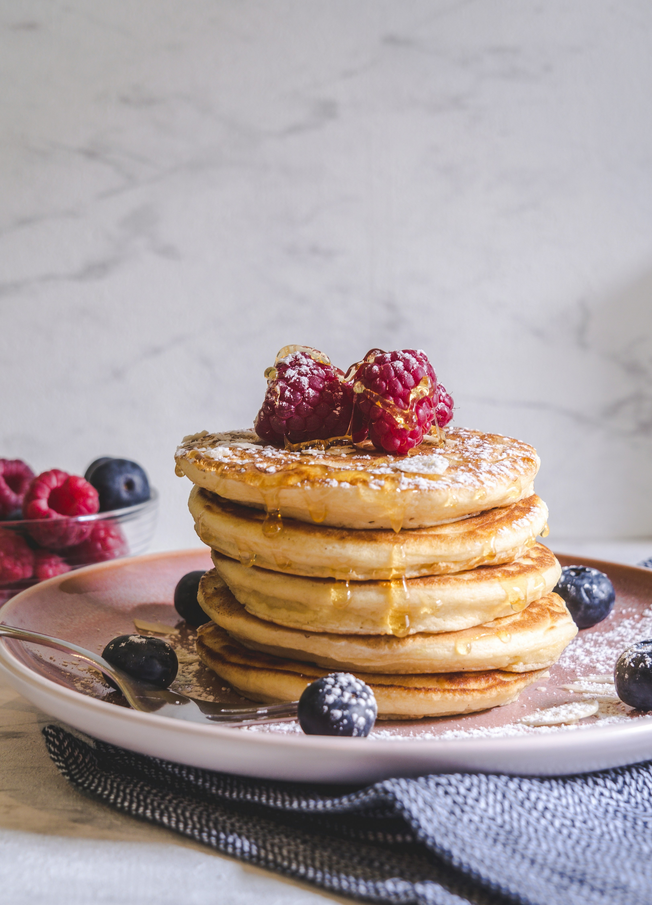

Pancakes

Photo by Jaqueline Pelzer on Unsplash
Description
Pancakes are a quick and easy dish for a perfect breakfast! They only need a couple ingredients and are simple to make.
What you'll need:
- Flour - 1 cup
- Sugar - 2 tbsp
- Baking powder - 2 tsp
- Salt - 1/2 tsp
- Milk - 1 cup
- Oil - 2 tbsp
- Egg - 1 egg, beaten
How to make it:
- Step 1
Gather all the ingredients.
- Step 2
- Combine flour, sugar, baking powder, and salt in a large bowl; make a well in the center.
- Pour in milk, oil, and egg, then mix until smooth.
- Step 3
- Heat a lightly oiled griddle or frying pan over medium-high heat.
- Pour or scoop about a quarter of a cup of batter per pancake onto the griddle.
- Cook until bubbles form and the edges are dry (1 to 2 minutes).
- Flip, then cook until browned on the other side.
- Repeat with remaining batter.
- Step 4
Add the toppings you like, serve, and enjoy!
Recipe from: allrecipes.com
Home